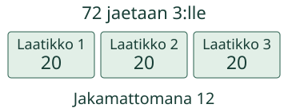
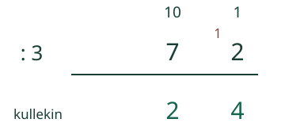
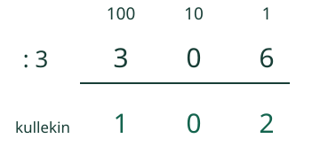

Loikka jakaa 72 simpukkaa kolmeen laatikkoon.
Jaan lukuyksiköt ja vaihdan ylijäämän.
Tasajaossa jokainen laatikko saa saman määrän.
Miten tämä lasketaan?
72 jaetaan kolmelle
Tee 72 nappia: 7 kymmenen nippua ja 2 irtonaista. Jokaiselle kolmesta laatikosta riittää ensin 2 nippua. Yksi nippu jää yli. Vaihda 1 kymppi 10 ykköseksi. Kahden irtonaisen kanssa jaettavana on 12. Jokainen saa 4. Siis 72 : 3 = 24.

Kirjaa paikkojen mukaan
Aloita suurimmasta paikasta vasemmalta. Seitsemästä kympistä tulee 2 kymppiä jokaiselle ja 1 kymppi yli. Seuraavassa paikassa on 10 + 2 = 12 ykköstä. Niistä tulee 4 jokaiselle, eikä mitään jää yli. Osamäärä 24 kertoo yhden laatikon määrän.

Toinen esimerkki: 156 : 4
Yksi sata ei riitä neljälle kokonaisena. Vaihda se 10 kympiksi. Viiden kympin kanssa on 15 kymppiä. Kukin saa 3 ja 3 kymppiä jää. Vaihda ne 30 ykköseksi. Kuuden kanssa on 36 ykköstä, joista jokainen saa 9. 156 : 4 = 39. Tarkista 4 × 39 = 156.
Nolla osamäärässä
306 : 3 = 102. Jokaiselle 1 sata,0 kymppiä ja 2 ykköstä. Jos poistat keskimmäisen 0:n, saat 12, mutta 3 × 12 ei ole 306. Satojen alkunollan voi jättää pois luvusta 039=39; keskimmäinen 0 luvussa 102 säilytetään.

Ennakoi: mitä tapahtuu, jos jaettavana onkin 157 neljälle?
Katso ajatus
Kukin saa 39 kokonaista ja 1 jää yli. 4 × 39 + 1 = 157. Yli jäävän määrän pitää olla pienempi kuin jakaja, muuten jokaiselle voisi vielä antaa yhden.
Kokeile itse
156 : 4. Vaihda myös satoja tarvittaessa.
Tarvitsen vihjeen
Jaa vasemmalta. Kerro osamäärän numero jakajalla. Vähennä ja vaihda yli jääneet seuraavan pienemmän yksikön kymmeneksi osaksi. Ota mukaan myös seuraavan paikan alkuperäiset yksiköt.
Rakennan yhden jakovaiheen
Voit harjoitella yhtä välivaihetta. Se ei ole pakollinen reitti lopputulokseen.
156 : 4. Nyt jaettavana 1 sataa. Montako kukin saa ja montako jää tässä paikassa yli?
Kokeile toisessa tilanteessa
144 korttia neljälle pelaajalle: 100 vaihtuu 10 kympiksi; jaettavana 14 kymppiä. Kukin 3 kymppiä ja 2 kymppiä yli. Seuraavaksi 24 ykköstä, kukin 6. Vastaus 36. Tarkista 4 × 36 = 144.
Opettajalle ja ilman ruutua
Luokat 3–6. Vaaditut M-MULDIV-01,M-MULTAB-ALL ja M-PLACE-05. Jaettava on kokonaisluku 0–999 ja jakaja 1–9. Nollalla jakamista ei tueta. Tässä jäljelle jäävät yksiköt käsitellään kokonaisina:osamäärä ja jakojäännös, ei desimaali- tai murtolukujakoa. Ylijäämä sadassa tai kympissä vaihdetaan pienemmän yksikön lukumääräksi; se ei tarkoita lopullista jakojäännöstä ennen viimeistä paikkaa.
Käytä sata-, kymmen- ja ykkösnippuja tai nimettyjä arvokortteja. Jaa 72 kolmelle ja 156 neljälle, näytä sama määrä ennen ja jälkeen vaihdon. Kirjaa osamäärän numerot paikoilleen ja tarkista kertomalla. Digitaalinen kuvataulukko ei todista fyysistä jakamistoimintaa.
Lopputuloksen kaksi lukua todentavat vain määräsuhteen. Välivaihe tarkistaa yhden paikan annetulla vaihdosta tulevalla määrällä, ei koko itsenäistä kirjallista prosessia. Palaute koskee vain nykyistä paikallista vastausta. Ei aikarajaa, puhe-, kuuntelu-, nimeämis- tai klikkausjärjestyspakkoa eikä henkilöhistoriaa. Malli ja vihje ovat tukea, eivät itsenäisen tai viivästetyn hallinnan näyttö. Tarkistin hyväksyy kokonaisluvun samanarvoisilla etunollilla, plusmerkillä ja desimaaliosan nollilla. Tarkistin ei pyöristä. Enintään 128 merkkiä/kenttä.
Lopuksi: Miksi jako 306 : 3 tarvitsee nollan vastauksen keskelle?